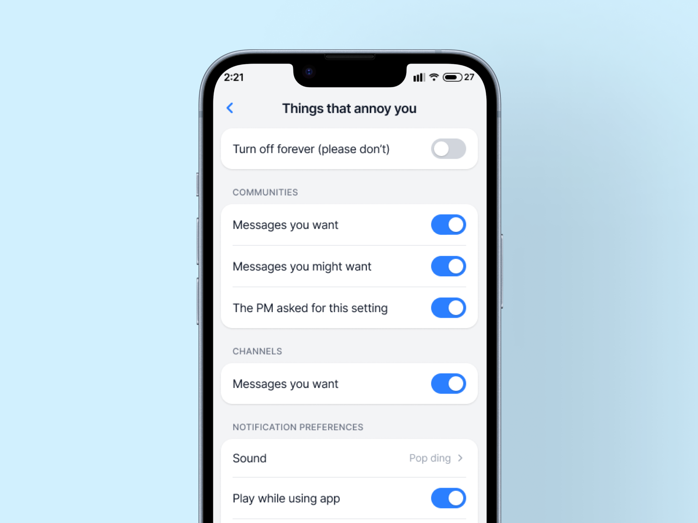
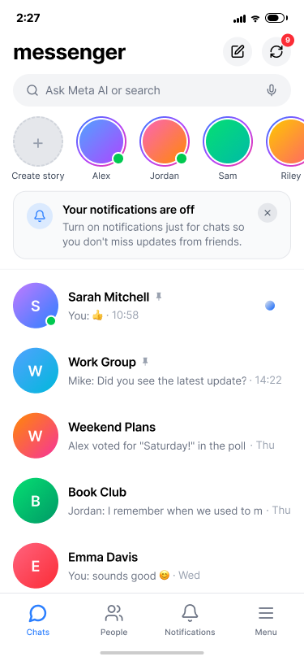
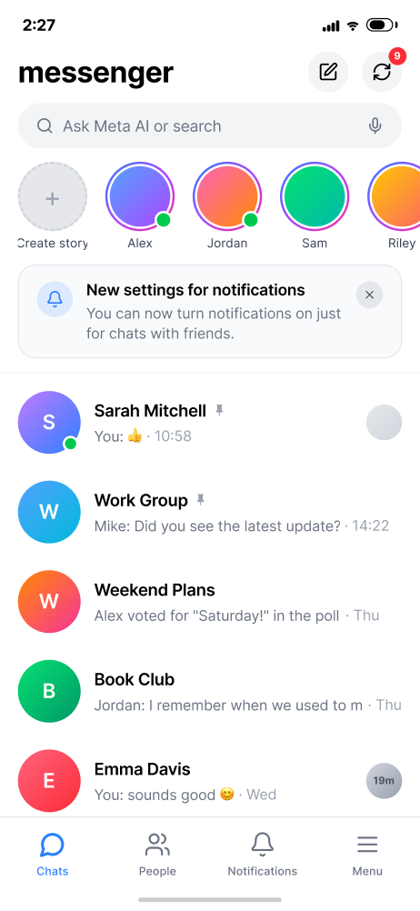
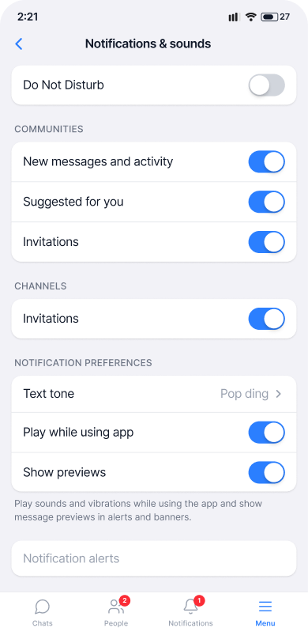

Messenger · 2023 · Lead Content Designer

Community Chats launched in growth mode, and notifications were the favorite lever. So notifications were liberal and generous. Then we learned that users were turning off notifications for the entire Messenger app if their communities became too loud. The noise from one surface was drowning out what people actually wanted: notifications from their friends.
Fix it.
I owned the language and settings experience end to end: the settings themselves, the upsell language, and the content updates that shipped to Android. Engineering owned the batching fixes. Together, we took a quality-first approach:
Repaired broken notification systems on Android, so the experience matched what we designed.
Built controls that let people control Community notifications without silencing the whole app.
Taught users about their options outside the Communities surface itself, meeting them where the frustration lived.
Grouped notifications deliberately.
Sample 1
Reminding users of their current notification settings and informing them of a new update.


Sample 2
We built out community-specific notification settings so that users didn’t need to silence the entire app.

Respecting attention is what makes growth sustainable. This work reminded me that attention is borrowed, but we only saw that in longer-term data. So the fix had to take a long-term mindset: honest settings that let people fine tune the noise, better notification batching, and fewer, better notifications.